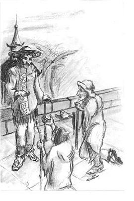

Tác giả rời Laputa - Người ta cho tác giả xuống Balnibarbi - Tác giả thăm thủ đô - Mô tả thủ đô và các vùng phụ cận. Một viên quan hiếu khách tiếp tác giả - Cuộc nói chuyện với viên quan ấy.
Mặc dù tôi không thể nào than phiền điều gì về việc tiếp đón đối với tôi trên hòn đảo nhưng dù sao cũng cần phải thừa nhận rằng tôi không giành được sự chú ý nào đặc biệt. Hơn nữa người Laputa hơi khinh thường tôi. Điều đó cũng dễ hiểu nếu ta nhớ rằng quốc vương và dân chúng không chú ý gì khác ngoài toán học và âm nhạc. Mà trong lĩnh vực kiến thức này tôi khá là lạc hậu so với họ vì thế không thể nào giành được sự kính trọng. Mặt khác, sau khi xem tất cả các danh lam thắng cảnh của hòn đảo, bản thân tôi cũng muốn rời bỏ nó. Tôi quả thực đã chán ngấy những con người ở đây. Họ thực sự am hiểu tinh tường trong toán học và âm nhạc. Nhưng những người Laputa có giáo dục lại đắm chìm vào lâp luận trừu tượng mà chưa bao giờ tôi có dịp gặp những người tiếp chuyện chán ngắt hơn ở đây. Bởi thế trong thời gian ở thăm hòn đảo, tôi cố gắng hết sức tránh tiếp xúc với họ để trò chuyện và chủ yếu tôi nói chuyện với các phụ nữ, thương gia, những người đập bóng và các thị đồng. Đó là những người duy nhất mà tôi có thể nhận được từ họ câu trả lời thông minh về câu hỏi đặt ra. Nhưng vì thế những người Laputa có giáo dục lại đối với tôi hết sức khinh miệt.
Nhờ có sự nỗ lực học tập mà tôi đã học khá tốt tiếng địa phương. Tôi cảm thấy buồn kinh khủng phải ở hòn đảo, nơi mà tôi cảm thấy chẳng có gì đáng chú ý. Tôi quyết định rời khỏi nó khi có cơ hội đầu tiên.
Tại cung đình, tôi thường xuyên gặp gỡ với một viên cận thần, thân thích với quốc vương. Tình thế này là một nguyên nhân duy nhất khiến cho triều thần kính trọng ông ta. Thật ra họ coi ông ta là một người cực kỳ ngu xuẩn và không lịch lãm. Ông là người đóng góp rất quan trọng cho quốc gia, có các khả năng tự nhiên rất lớn và khác biệt bởi tính trung thực và trọng danh dự. Nhưng tiếc thay tai của ông ta lại chẳng nhạy cảm với âm nhạc, và theo sự cam đoan của những kẻ có ác ý, ông thường xuyên đánh nhịp không đúng. Tình trạng cũng giống như thế với toán học, những thầy giáo hết sức khó khăn mới có thể dạy ông chứng minh các định lý toán học hết sức sơ đẳng. Viên cận thần này có thiện cảm đặc biệt với đối với tôi. Ông thường đến thăm tôi, mong thu nhận được được những kiến thức về châu Âu, về luật pháp và các tập tục và khoa học của các nước khác nhau mà tôi đã từng đi thăm. Ông nghe tôi rất chăm chú rồi đưa ra những nhận xét thông minh về những chuyện kể của tôi. Đi hầu ông bao giờ cũng có hai người đập bóng, nhưng ông không bao giờ cần đến họ, trừ trường hợp tại những nghi lễ cung đình và trong các cuộc viếng thăm chính thức. Khi chỉ có chúng tôi với nhau, ông bao giờ cũng cho họ nghỉ.
Tôi yêu cầu con người đáng kính này xin quốc vương cho tôi được phép rời khỏi hòn đảo. Viên cận thần mặc dù rất lấy làm tiếc như ông đã nói với tôi, đã hoàn thành yêu cầu của tôi. Mong muốn giữ tôi lại hòn đảo, ông đã đặt cho tôi rất nhiều đề nghị tế nhị, nhưng tôi đã từ chối với một lòng biết ơn sâu sắc.
Ngày 16 tháng 2, tôi từ biệt quốc vương và triều thần. Quốc vương đã tặng tôi những tặng vật trị giá gần hai trăm bảng Anh, tôi cũng nhận được tặng vật tương tự từ người bảo hộ của tôi, người thân thích với quốc vương. Ngoài ra, ông đưa cho tôi một bức thư giới thiệu cho người bạn của mình sống ở Lagado thủ đô của vương quốc. Trong thời gian đó hòn đảo đang bay ở cách thủ đô hai dặm và tôi được hạ xuống từ hành lang thấp nhất của hòn đảo nhờ vào cái ghế ngồi gắn vào các dây xích mà trên đó hai tháng trước đây tôi đã được nâng lên.
Lãnh địa trên đất liền của quốc vương hòn đảo bay được gọi là Balnibarbi còn thủ đô của vương quốc này như tôi đã kể, gọi là Lagado. Tôi không thể nào tả hết niềm hân hoan khi chân mình đặt lên nền đất cứng. Bởi vì tôi đã mặc bộ quần áo địa phương và tôi đã nắm ngôn ngữ khá vững để trao đổi với dân địa phương, do đó tôi chẳng khó khăn gì đã đặt chân được vào thủ đô. Tôi đã nhanh chóng tìm được ngôi nhà mà người bảo hộ của tôi đã chỉ tôi đến và trao cho ông ta bức thư giới thiệu và đã được đón tiếp rất lịch thiệp. Đó là một viên quan tên là Munodi, ông ra lệnh sửa soạn cho tôi một căn phòng trong nhà mình và tôi đã ở đó trong suốt thời gian lưu lại thủ đô.
Sang ngày hôm sau, vị chủ nhân mời tôi ngồi xe ngựa và hướng dẫn tôi đi thăm thủ đô. Thành phố này nhỏ hơn Luân đôn hai lần. Nhà cửa trong thành phố được xây dựng rất kì quái, phần nhiều chúng đã bị bán hủy hoại. Những người qua đường có dáng vẻ hoang dại thế nào đó. Hầu hết họ đều ăn mặc rách rưới, họ giương mắt lên đi lại hiên ngang trên đường phố. Sau khi đi qua cổng thành, chúng tôi ra tới cánh đồng. Ở đây chúng tôi nhìn thấy những người nông nhân đang làm việc với các công cụ hết sức đa dạng. Nhưng tôi không sao hiểu được chính thực họ đang làm việc, vì trên cánh đồng tôi chẳng thấy có một vết tích nhỏ nhặt nào của cỏ cây và lúa mì, mặc dù đất thật sự màu mỡ. Tôi cực kì kinh ngạc trước tất cả những điều trông thấy và quyết định tìm lời giải thích ở người bạn đi cùng với mình. Ở tất cả những người gặp trên đường đều có nét mặt băn khoăn lo nghĩ. Họ đang vội vã đi đâu đó, đang bận gì đó trong thành phố cũng như trên cánh đồng, nhưng kì thực sự hoạt động sôi nổi ấy không đem lại kết quả nào. Ngược lại tôi chưa bao giờ được trông thấy những cánh đồng được canh tác tồi tệ hơn, những nhà cửa được xây dựng xấu hơn và những con người có bộ mặt đăm chiêu như thế, trong những bộ quần áo rách rưới nghèo nàn đến như vậy.

Ngài Munodi là người rất có tiếng tăm. Trong một số năm ông đã giữ chức thống đốc Lagado nhưng theo tham mưu của các vị thượng thư, ông bị cắt chức dường như vì không có khả năng đảm đương chức vụ. Nhưng dù sao ông không bị mất thiện cảm của quốc vương, ngài đánh giá ông là một người đáng tin cậy, tốt bụng dù có hơi nông cạn. Munodi trả lời một cách thận trọng và ngắn gọn. Ông chỉ hạn chế bằng các nhận xét rằng tôi ở đây quá ít thời gian để có thể rút ra những nhận định đúng đắn về con người và đất nước của nó, rằng mọi dân tộc đều có phong tục và tập quán của riêng mình, rồi lái câu chuyện sang một chủ đề khác. Nhưng khi chúng tôi đã quay trở về nhà, ông hỏi tôi có thích ngôi nhà của ông không, tôi có nhận thấy thiếu sót nào đó trong kiến trúc của ngôi nhà hay không, tôi có những nhận xét gì về vẻ bề ngoài và cách ăn mặc của những người hầu của ông không. Ông đã có thể bình tĩnh đặt những câu hỏi đại loại như: tất cả ở chỗ ông hoàn toàn bình thường, được khác biệt bởi sự trang nhã và sang trọng không? Tôi trả lời là trí thông minh, sự hiểu biết và sự giàu có của ông có thể giúp đỡ ông tránh khỏi tất cả những phi lý mà những người đồng hương của ông bị ràng buộc bởi sự thiếu suy xét, hoặc sự khốn cùng cùng cực. Về điều này Munodi nhận xét là những cuộc nói chuyện đại loại như vậy tốt hơn cả là tiến hành ở biệt thự ngoại ô của ông, cách thành phố chừng hai mươi dặm. Ông đề nghị ngày mai sẽ đi đến đấy và tôi rất vui lòng về điều này.
Dọc đường, Munodi lưu ý tôi tới các phương pháp khác nhau được các trại chủ sử dụng để canh tác đất. Tất cả các phương pháp này tôi hoàn toàn không biết và khó hiểu vì chỉ trừ ngoại lệ rất hiếm, tôi không thể nào thấy một bông lúa hay một cọng cỏ nào trên các cánh đồng. Nhưng sau ba giờ đi đường, phong cảnh hoàn toàn đổi khác. Xuất hiện những căn nhà xinh đẹp của nông dân, những cánh đồng có rào giậu, những vườn nho, những cánh đồng đã cày xới, những ruộng lúa tươi tốt, những đồng cỏ xanh rì. Từ lâu tôi chưa từng thấy một phong cảnh đẹp mắt đến như vậy. Munodi sau khi nhận thấy vẻ mặt của tôi tươi tỉnh lên, ông nói với tôi là từ đây bắt đầu lãnh địa của ông. Đồng thời ông thở dài một cách nặng nề nói thêm rằng, những người đồng hương của ông khinh thường ông vì ông đã cai quản sản nghiệp tồi đến như vậy và đã nêu một tấm gương xấu.
Cuối cùng chúng tôi đã tới gần nhà. Đó là một ngôi nhà lộng lẫy với kiểu kiến trúc cổ tuyệt đẹp. Những vòi phun nước, những vườn cây, những đường đi trồng cây hai bên, những cánh rừng, tất cả được sắp đặt rất thông mình và thẩm mỹ rất cao. Tôi không tiếc lời khen ngợi những gì mà tôi thấy, nhưng vị chủ nhân của nó chẳng để ý gì đến những lời của tôi. Sau khi ăn bữa chiều, khi chúng tôi chỉ còn lại một mình, chủ nhân với vẻ buồn rầu nói rằng thỉnh thoảng ông có ý nghĩ sẽ dựng lại ngôi nhà của mình theo những mốt mới nhất và tiến hành các biện pháp canh tác mới nhất với lãnh địa của mình. Ngược lại, ông đã mạo hiểm lôi kéo về mình những lời chỉ trích về tính kiêu ngạo, lập dị, thói làm bộ làm tịch, vô lễ, độc đoán cùng tất cả những gì gây ra sự bất bình của quốc vương. Còn quốc vương dù không có những cái đó cũng không tin tưởng vào ông. Ông bày tỏ nỗi lo ngại rằng sự kính phục của tôi sẽ bị nguội đi nhanh chóng khi ông thông báo cho tôi biết những chi tiết nào đó mà chắc tôi đã nghe thấy ở cung đình. Chính ở đó, nơi cung đình ấy, mọi người cứ đắm chìm trong suy tưởng cao siêu, chẳng có lúc nào chú ý đến những gì tạo ra trên mặt đất.
Thực chất câu chuyện của ông có thể đại lược như sau. Gần bốn mươi năm trước đây, một số cư dân của thủ đô được đưa lên Laputa. Họ đã ở trên đó năm tháng và trở lại với những kiến thức hết sức nông cạn về toán học nhưng lại tích lũy quá nhiều những điều khinh suất và hời hợt tiêm nhiễm trong bầu không khí ở trên đó. Trong thời gian lưu lại trên đó, những người này đã ăn sâu ý tưởng khinh mạn đối với tất cả những gì mà chúng tôi tạo ra và bắt đầu lập ra những dự án cải tổ lại khoa học, nghệ thuật, luật pháp, ngôn ngữ và kĩ thuật theo phương thức mới. Với mục đích này họ đã cạy cục xin được đặc ân của quốc vương cho lập Viện Hàn Lâm của những kẻ sính thảo dự án ở Lagado. Dự định này đã dẫn đến kết quả là chẳng một thành phố lớn nào lại không có một Viện như thế. Trong các Viện ấy các giáo sư chế tạo phương pháp mới canh tác đất đai và xây dựng nhà cửa, những công cụ và máy móc cho tất cả các ngành thủ công. Họ tin rằng nhờ những máy móc và công cụ ấy mà một người sẽ hoàn thành công việc của hàng chục người. Theo lời của họ khi sử dụng các phương tiện do họ tạo ra chừng một tuần lễ có thể xây dựng một cung điện bằng loại vật liệu chắc chắn đến mức cung điện sẽ tồn tại vĩnh viễn không cần bất kỳ sự sửa chữa nào, tất cả các hoa quả trên trái đất sẽ chín vào bất kỳ thời gian nào của năm, hơn nữa những hoa quả này sẽ có kích thước vượt các loại hiện có hàng trăm lần... Không thể nào kể hết bằng lời tất cả những dự án mang lại hạnh phúc cho loài người. Đáng tiếc là chẳng có một dự án nào được tiến hành cho đến cùng. Trong lúc đó đất nước vẫn chờ đợi lợi ích tương lai mà đi đến hoang tàn, nhà cửa đổ nát, dân chúng thì đói khát và rách rưới.[1]
Tuy nhiên tất cả các điều đó không làm nguôi lạnh lòng nhiệt thành của những kẻ sính thảo dự án. Ngược lại, được cổ vũ bởi niềm hy vọng cũng như thất vọng như nhau, họ còn cố gắng thực hiện ráo riết hơn những dự án của mình vào cuộc sống.
Nhưng bản thân Munodi thì lại là một con người không tháo vát lắm, ông vẫn sống trong ngôi nhà do tổ tiên xây dựng và noi gương tổ tiên trong mọi việc, chẳng thực hiện điều gì mới mẻ. Một số người trong giới quyền quý và quý tộc bậc trung cũng xử sự như vậy. Người ta nhìn họ với sự khinh bỉ và không thân thiện, như là đối với các kẻ thù dốt nát của khoa học và những thành viên thù địch của xã hội, hy sinh sự phồn thịnh của xã hội bằng sự lười nhác và yên tĩnh của bản thân.
Để kết luận vị chủ nhân nói rằng ông không định thông báo cho tôi những tiểu tiết tiếp theo. Ông không muốn tôi mất niềm vui của tôi mà tôi chắc chắn sẽ có được khi tự mình đi thăm Viện hàn lâm vĩ đại, nơi ông quyết định sẽ dẫn tôi đến. Ông chỉ yêu cầu hãy chú ý đến những cảnh đổ nát nhìn thấy rõ ở trên sườn núi cách chúng tôi ba dặm.
Ngày xưa cách không xa ngôi biệt thự của chúng tôi có một cối xay nước tốt nằm bên một con sông lớn. Cối xay đã phục vụ chủ nhân của nó và tất cả những ai đến thuê. Gần bảy năm trước đây xuất hiện một đoàn các nhà thảo dự án đến chỗ cối xay với đề nghị phá bỏ cối xay này, xây dựng cối xay mới trên sườn núi. Trên đỉnh núi họ cho đào một con kênh dài, con kênh này sẽ dùng để chứa nước. Nước dự kiến bơm bằng các bơm đặc biệt vào kênh. Theo ý kiến của họ, nước tích tụ trên đỉnh núi sẽ được tăng cường sức mạnh bởi gió và không khí trong lành có khả năng đẩy nước trong các sông chảy mạnh hơn ở chỗ bằng phẳng, ngoài ra do chỗ chảy từ phía trên xuống, nước sẽ có một sức mạnh gấp đôi và vì thế cối xay sẽ làm việc nhanh gấp đôi chỗ kia. Đồng thời, quan hệ của ông với cung đình đang bị lung lay. Mong muốn chấn chỉnh lại quan hệ này ông chấp nhận đề nghị của họ theo lời yêu cầu của các bạn bè. Sau hơn hai năm xây dựng với sự tham gia của hơn một trăm người, công trình bị đổ vỡ. Những nhà dự thảo trốn biệt và đổ tất cả lỗi lầm cho ông. Từ đó đến nay họ thường xuyên chế giễu ông và xúi giục những người khác thực hiện những thử nghiệm tương tự cũng với bảo đảm thành công như thế.
Sau đó vài ngày chúng tôi quay trở về thành phố. Vị chủ nhân đã có thanh danh không được tốt trong Viện hàn lâm. Bởi thế ông không định dẫn tôi đến đấy mà tự mình giao phó tôi cho một người bạn của mình. Vị chủ nhân của tôi giới thiệu tôi như là một người quan tâm tới các dự án rất hiếu kỳ và nhẹ dạ. Nhưng dù sao điều đó cũng không xa với sự thật vì lúc trẻ tôi cũng là một người sính thảo dự án lớn.
Chú thích:
[1] Chương này chế nhạo cơn sốt đầu cơ của các năm 1719, 1720 và 1721. Khi đó ở Anh xuất hiện vô số các công ty cổ phần và hội thương mại, mà những kẻ tổ chức các công ty và các hội này là những kẻ doanh lợi tháo vát và những kẻ phiêu lưu- hấp dẫn công chúng nhẹ dạ vào những kế hoạch hết sức viễn tưởng của sự làm giàu nhanh. Những công ty và hội này có thể gọi là “những bong bóng xà phòng” bị tan vỡ cũng nhanh chóng như là xuất hiện, đôi khi chúng đưa những người đóng góp cổ phần tới cảnh phá sản hoàn toàn. Về chủ đề này Swift đã viết tác phẩm châm biếm gọi là “ Kinh nghiệm về các bong bóng xà phòng Anh”.